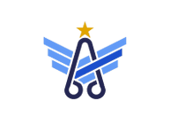
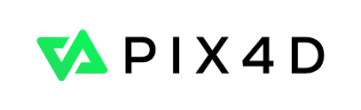
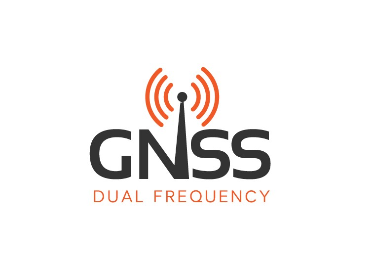
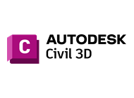
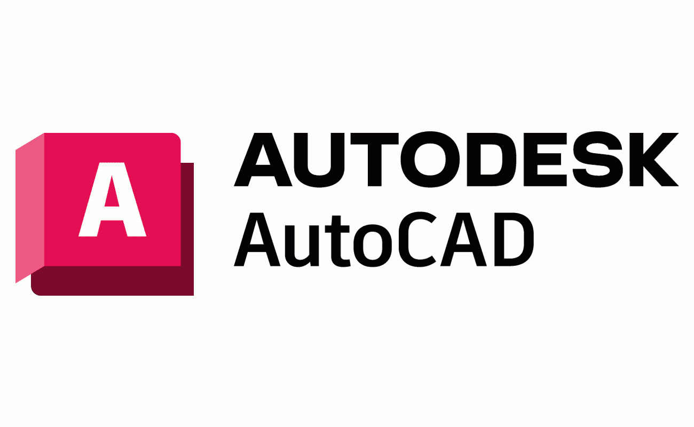
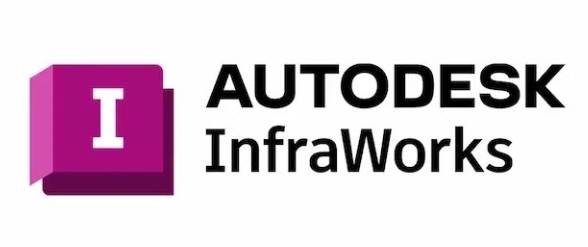
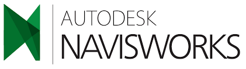
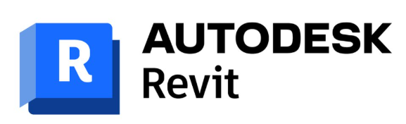
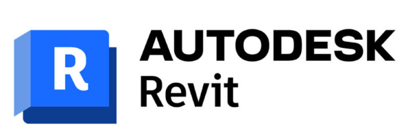
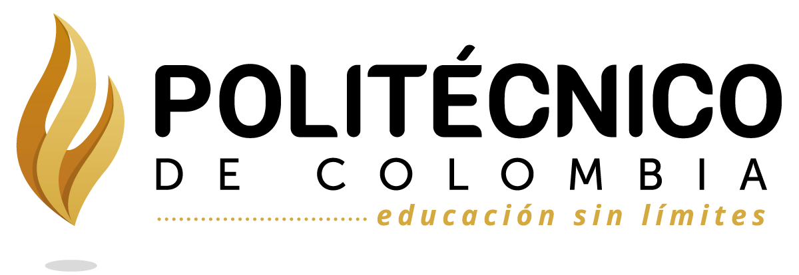

Certificaciones
Acreditaciones profesionales vigentes
Piloto Operaciones RPAS
Certificado de Idoneidad Piloto UAS

Certificado S.M.S
Gestión de Seguridad Operacional
Certificado BVLOS
Operacion mas alla de la Linea de Vista

Certificado Pix4D
Software Fotogrametrico

Certificado GNSS
Aplicaciones de Sistema Global de Navegación por Satelite

Certificado Autodesk Civil 3D

Certificado Autodesk Autocad
Certificado Autodesk Recap

Certificado Autodesk Infraworks

Certificado Autodesk Navisworks

Certificado Autodesk Revit Architecture

Certificado Autodesk Revit Mep
